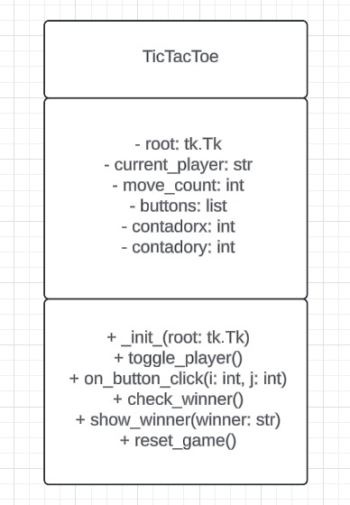

Clase TicTacToe
La clase TicTacToe es la clase principal del juego. Aquí se encuentra la lógica y la interacción con la interfaz gráfica.
1. Constructor __init__
- self.root: Almacena la instancia raíz de Tkinter (la ventana principal del juego).
- self.root.title("Tic Tac Toe"): Define el título de la ventana del juego como "Tic Tac Toe".
- self.current_player = "x": Inicializa el jugador actual como "x".
- self.move_count = 0: Inicializa un contador para llevar la cuenta de los movimientos realizados.
- self.buttons = []: Crea una lista para almacenar los botones del juego.
Creación de los botones del juego:
- Un ciclo for anidado crea un total de 9 botones (3x3) para la cuadrícula del juego.
- Cada botón es creado con la función tk.Button():
- text="": Inicialmente, el botón está vacío.
- font=('normal', 40): Define el tamaño y tipo de fuente del texto.
- width=5, height=2: Establece el tamaño del botón.
- command=lambda i=i, j=j: self.on_button_click(i, j): Asocia una función de devolución de llamada (self.on_button_click) a cada botón. Esta función se ejecuta cuando se hace clic en el botón.
- Cada botón se ubica en la cuadrícula usando button.grid(row=i, column=j).
- Los botones se agregan a la lista self.buttons para facilitar el acceso.
2. Método toggle_player
- Cambia el jugador actual entre "x" y "0".
3. Método on_button_click
- Este método se ejecuta cuando se hace clic en un botón del juego.
- Verifica si el botón seleccionado está vacío (self.buttons[i][j]["text"] == "").
- Si está vacío, coloca el símbolo del jugador actual en el botón (self.buttons[i][j]["text"] = self.current_player).
- Desactiva el botón para evitar que se vuelva a hacer clic (self.buttons[i][j]["state"] = "disabled").
- Incrementa el contador de movimientos (self.move_count += 1).
- Verifica si hay un ganador usando self.check_winner().
- Si no hay un ganador, cambia el jugador actual usando self.toggle_player().
4. Método check_winner
- Define todas las posibles líneas ganadoras del juego: filas, columnas y diagonales.
- Iteración sobre las líneas para verificar si hay tres símbolos iguales.
- Si se encuentra una línea ganadora, se llama al método self.show_winner() para mostrar un mensaje de victoria.
- Se devuelve True para indicar que el juego ha terminado.
- Si se han hecho todos los movimientos (self.move_count == 9) y no hay un ganador, se muestra un mensaje de empate.
- Se llama al método self.reset_game() para reiniciar el juego.
- Se devuelve True para indicar que el juego ha terminado.
- Si no hay un ganador y no se han hecho todos los movimientos, se devuelve False.
5. Método show_winner
- Muestra un mensaje de victoria con el símbolo del ganador.
- Reinicia el juego llamando a self.reset_game().
6. Método reset_game
- Reinicia el juego a su estado inicial.
- Restablece el contador de movimientos (self.move_count = 0).
- Vacía el texto de todos los botones (button["text"] = "").
- Habilita todos los botones para que se puedan hacer clic de nuevo (button["state"] = "normal").